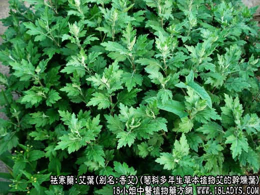
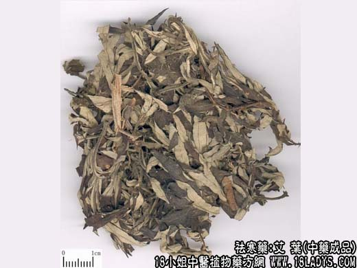
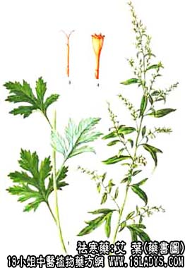

艾叶为常用中药。始载《名医别录》。
别名：艾蒿、蕲艾、香艾。
来源：为菊科多年生草本植物艾的干燥叶。
产地：全国大部分地区又产。以安徽、山东、湖南、湖北产量大。
植物形态：为多年生草本，高40~120厘米。茎直立，圆柱形，质硬，基部木质化，外披灰白色软毛，茎中部以上分枝。茎下部的叶在开花时枯萎，单叶，不规则互生，具短柄，叶片卵状椭圆形，羽状深裂，背面灰绿色，密披白色绒毛，近茎顶端的叶片有时全缘，无柄，披针形。花序总序排列，顶生或多数的头状花序集合而成。瘦果长圆形。
性状鉴别：艾叶：多为皱缩破碎或少带短茎的叶片，表面灰绿色，背面灰白色，密布灰白色绒毛，质柔软，断面有白绒毛，气清香味苦。
艾绒：系将艾叶捣碎成绒团状，灰绿色，质柔软而韧，用行捻之似棉絮。
艾条：系去净叶片之艾茎，圆柱形有纵沟，密布灰白色绒毛，有明显的互生叶痕，质坚韧，断面黄绿色，中央有白色髓。
主要成分：含挥发油，其中主成分为水芹烯、侧柏醇、杜松油萜。
药理作用：温经而止血，散寒除湿镇痛。现证实其原理为：
1、止血。能缩短出血和凝血时间，炒炭后作用较显著。
2、抗真菌。艾叶煎剂对皮肤癣菌有微弱的对抗作用。艾熏法对多重致病性皮肤真菌有抗菌作用。
3、健胃。促进胃液分泌，增进食欲，但大量反会引起恶心、呕吐。
炮制：艾叶：生用或炒炭。艾条：切咀生用。
性味：辛、苦、温。
归经：入肝、脾、肾经。
功能：散寒温，理气血，暖子宫，止血。
主治：腹中冷痛，经寒不调，宫冷不孕，吐血衄血，崩漏带下。
临床应用：常用于妇产科止血安胎。
1、治胎动不安，有下腹痛和阴道流血（先兆流产），常配阿胶止血，四物汤（去川芎）调和血脉，再加桑寄生、黄芩、续断等加强安胎作用，方入胶艾四物汤加减。
2、治虚寒出血，尤其妇科崩漏、月经过多。艾叶炭作为辅助药，与血余炭、陈棕炭、侧柏叶等同用，再随证配补益药和收涩药。
3、治寒证腹痛，例如妇女经痛而见证属寒者，可用艾叶、香附辅助四物汤温经止痛（寒甚可加干姜、肉桂）。
4、治湿疹癣癞等皮肤病，内痈艾叶祛寒湿，常配蝉蜕、蒺藜、防风、黄芪等水煎服；外用则以艾叶30g、雄黄0.6g，硫磺0.6g，制成艾卷炙患部，或煎水熏洗，效果较好。
5、艾绒可作为温炙的材料用。
附：共叶和肉桂比较：1、两者都能治寒证腹痛（有时同用），但艾叶以祛寒逐湿见长，主治寒湿腹痛，阴虚而有伏热者也用，而肉桂温中助阳，主治虚寒腹痛，四肢冰凉，表现阳虚者则适宜，阴虚阳亦不足者亦用；2、艾叶能止血、调经、安胎，而肉桂能行血不能止血，能动胎不能安胎。
用量：3~15g，外用适量。
处方举例：胶艾四物汤加减：阿胶12g（溶化）、艾叶6g、当归9g、白芍4.5g、熟地12g、桑寄生18g、川断9g、菟丝子12g、白术12g、黄芪12g，水煎服。
注：家艾的原植物主要为艾，特点：叶片大而肥厚，清香味浓、艾绒多，质量好。野艾的原植物则有阿及艾，野艾，锡业艾等。特点是叶片小，瘦长而薄，清香味淡、艾绒少，质量较次。
以上为艾的功效与作用，查看更多中药请关注中药大全。